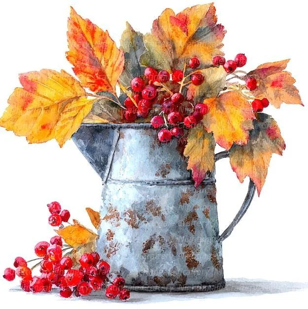
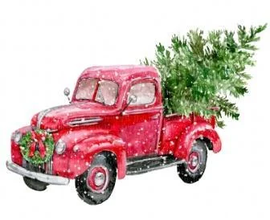
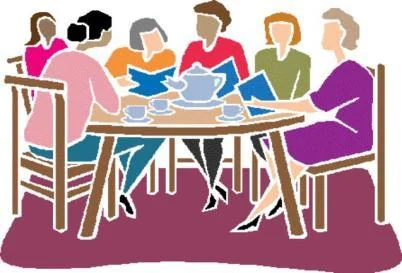
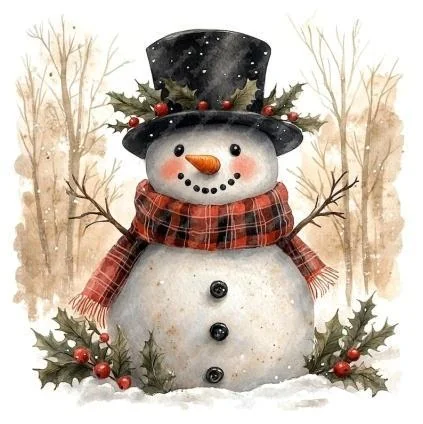
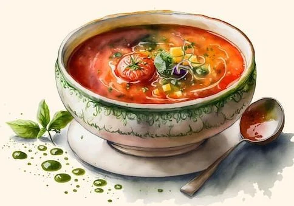
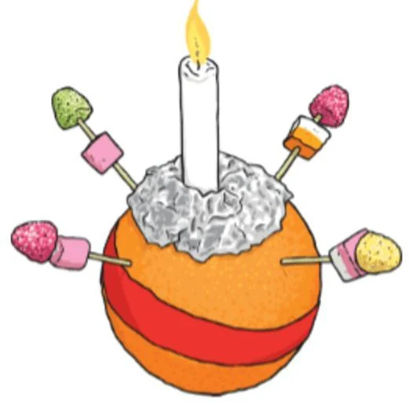
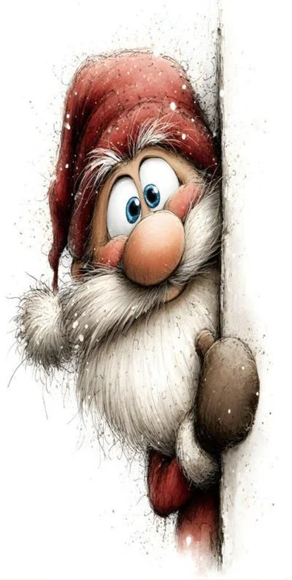
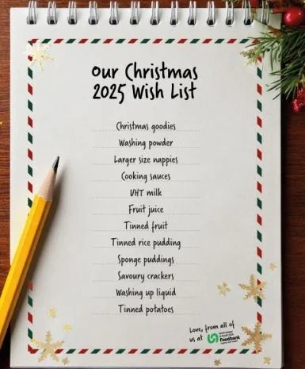
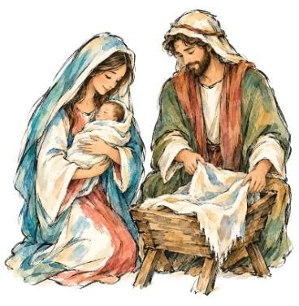
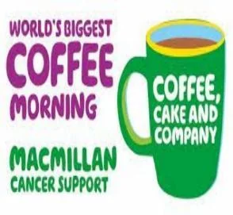

Pews News
The Second Sunday before Advent

This Sunday
10am
Holy Communion Service
in Church
Today’s readings
1 Thessalonians 5.1-11 & Matthew 25.14-30
The Collect for today
Heavenly Lord, you long for the world’s salvation: stir us from apathy, restrain us from excess and revive in us new hope that all creation will one day be healed in Jesus Christ our Lord. Amen.

Join the service on Zoom
If you are zooming, please try and join at least five minutes before the service is due to start; the codes are set out below
Meeting ID 812 6812 6840Passcode 221883
Join by telephone
If you would prefer to dial in on your telephone, call any of the numbers below to listen to the service: there will be a recorded message and you will be asked to enter the Meeting ID and then the Passcode.
The weeks ahead
Deadline for Christmas Tree orders
Monday 16th November
If you would like to buy your Christmas Tree and support Mickleham Children’s Playground, please see the information and link to order form on page 17 of the November Parish Magazine, and place your order without delay! Very good quality trees and available for collection 28/29 November.

Interment of Ashes
Monday 16th November at 11.30am
Interment of Ashes of the late Jane Miller in the churchyard.
T@3
Monday 16th November at 3pm
T@3 hosted by Julia and Richard Siberry at Old House, Old London Road, Mickleham RH5 6EQ. All welcome – Transport available. For directions, please speak to Julia in church or call her on 01372 375303. If you can help at future events, please contact Julia at siberrman@btinternet.com.
Please note there is no T@3 in December.
The Alpha course
Monday 16th November at 7.30pm (finishing by 9pm)
The Alpha course meets in The Ranmore Room (the vestry).
Monday evening Bible study
Monday 16th November at 7.45pm until 9pm
The Monday evening Bible study group meets at Westhumble Chapel. Please contact Amanda on aewadsworth@hotmail.com if you would like more information about joining this group.
Ascending Deeper
Tuesday 17th November at 7.30pm
Ascending Deeper evening on the topic of What does the Bible say about Migration? Thank you to those who have let me know they are intending to come but if you have not done so, please get in touch by this Sunday evening as numbers need to be finalised. Thank you. Sandra
Thursday morning Bible study
Thursday 19th November at 11am for 11.30am start until 12.30pm
The Thursday morning Bible Study group meets at Westhumble Chapel. If you would like to join this group, please email admin@micklehamchurch.org.uk or call Alison Wood on 01372 376443 or 07905 985928.

Women’s Breakfast
Saturday 21st November from 9am till 10am
Women’s Breakfast at The Stepping Stones. Book with Alison Wood if you would like to join this friendly group: call 07905 985928 or 01372 376443 or email Alison on alison.wood29@btinternet.com.
Children’s Christmas Concert: The Snowman
Sunday 22nd November at 4pm
There is a Children’s Christmas Concert ‘The Snowman’ in church followed by the lighting of the Christmas Trees outside the church at 4.45pm and refreshments provided by the Church Community Group. Retiring collection in aid of UNICEF.

Interment of Ashes
Tuesday 24th November at 12.30pm
Interment of Ashes of the late Sheila Honeyman in the churchyard.
Compline
Tuesday 24th November at 7pm (please note later date)
Compline in church. All are welcome to come along for a short service and period of reflection, prayer and fellowship.
Autumn Soup Lunch
Thursday 26th November at 12.45 for 1pm
Autumn Soup Lunch in Mickleham Village Hall. Delicious homemade soups, bread and cheese and good company. No charge but donations gratefully received, with all proceeds going to local charities (including the Foodbank).
To help with numbers, please book your place with Andy Diamond by calling 07789 775354 or email him at adiamond714@gmail.com, or sign the list at the back of the church.

Men’s Breakfast
Saturday 28th November from 9am till 10am
Men’s Breakfast at The Stepping Stones. Book with Andy Diamond: email adiamond714@gmail.com. All welcome.
At a glance
Dates for your diary
Dates for your diary.
Open a notice for full details.

Sunday 6th December at 10am for the workshop, followed by the Family Service at 11am
Christingle Craft Workshop and Family Service
Full details
Please note that the Christingle Craft Workshop and Family Service will be on Sunday 6th December, at 10am in church for the workshop followed by the service at 11am.
All families welcome to come and make their Christingles and enjoy Christmas crafts and worship together. The workshop is free but please book with Francesca on franikins@hotmail.co.uk to help us plan for numbers and supplies.

Saturday 12th December
Christmas Fair at Westhumble Chapel
Full details
A chance to buy last-minute Christmas presents and enjoy a cup of mulled wine. Delicious handmade chocolates, sumptuous patchwork quilts, Westhumble honey, Christmas wreaths and much more.
Caring for our neighbours
News from the Food Bank

Thank you so much for your continued kindness and support. Here are some suggested items that are needed this week:
- Spreads (honey, jam, peanut butter)
- Tinned potatoes
- Meat Meals for 1
- Adult Toothbrushes
- Shampoo
- Washing-up liquid
In addition, the FoodBank is gratefully receiving any of the below Christmas items as December is just around the corner:
- Christmas Cake
- Christmas Biscuits
- Christmas Pudding
- Chocolate Coins
- Chocolate Advent Calendars
You can also drop donations off in Church on Sunday morning, at the monthly Chapel Coffee morning (10am to 12noon) at The Stepping Stones, or at any time at any of the usual locations in Mickleham and Westhumble, details in the Parish Magazine

The Nativity Journey at Wintershall - 15th to 20th December 2026
If you have never been to the Wintershall Nativity you may be interested in finding out more about the event. Wintershall is a private estate near Godalming which hosts a re-enactment of the Nativity story.
Attendees can discover the true meaning of Christmas with an unforgettable immersive event for all the family. They stand with the shepherds, walk with Mary, Joseph and the donkey, journey with Roman soldiers and enter the stable to watch the miracle unfold. See the flyer attached to covering email.
Tickets can be booked here: https://www.wintershall.org.uk/event/the-nativity-journey/
A short introductory video is available here: https://youtu.be/xoAFCjrJC88?si=ocGQrvQq3dylr5CN

A message from Liz
Thank you very much for your support for Macmillan Cancer Research at the Coffee Morning at Chapel Farm last week. I am just about to bank the money raised. This year the total has come to £2,546.50 which is an incredible result. What an amazing team of friends and neighbours you all are. Thank you. I hope that those of you who came along enjoyed the morning and for those of you who couldn’t make it - I hope to see you next year! The money raised from these coffee mornings is vital in allowing Macmillan to continue their work supporting those with cancer in so many ways. Thank you. Please pass on my thanks to anyone who you may have brought with you to the farm last week. It was amazing to see so many people here.